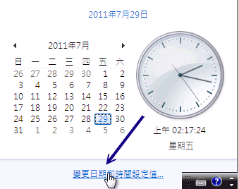

12.3 DHCP 客户端的设定
DHCP 的客户端可以是 Windows 也可以是 Linux 呢！鸟哥的网域内使用三部计算机，就如图 3.2-1 所示的那样。 Linux 与 Windows XP 的设定方式已经分别在第四章与第三章谈过了，底下就稍微介绍过而已。至于图示的部分， 我们主要是以 Windows 7 来做介绍啰。
12.3.1 客户端是 Linux
Linux 的网络参数设定还记得吧？不记得的话就得要打屁股了！在第四章 (4.2.2) 我们谈过自动取得 IP 的方式，设定真的很简单：
[root@clientlinux ~]# vim /etc/sysconfig/network-scripts/ifcfg-eth0
DEVICE=eth0
NM_CONTROLLED=no
ONBOOT=yes
BOOTPROTO=dhcp <==就是他！指定这一个就对了！
[root@clientlinux ~]# /etc/init.d/network restart
同时记得要拿掉预设路由的设定喔！改完之后，就将我们的整个网络重新启动即可 (不要使用 ifdown 与 ifup ，因为还有预设路由要设定！)。请注意，如果你是在远程进行这个动作， 你的联机『肯定会挂掉！』，因为网络卡被你关了嘛！呵呵！所以请在本机前面才进行喔！如果执行的结果有找到正确的 DHCP 主机，那么几个档案可能会被更动喔：
# 1\. DNS 的 IP 会被更动呢！查阅一下 resolv.conf 先：
[root@clientlinux ~]# cat /etc/resolv.conf
search centos.vbird <==还记得设定过 domain-name 否？
domain centos.vbird <==还记得设定过 domain-name 否？
nameserver 168.95.1.1 <==这就是我们在 dhcpd.conf内的设定值
nameserver 139.175.10.20
# 2\. 观察一下路由啦！
[root@clientlinux ~]# route -n
Kernel IP routing table
Destination Gateway Genmask Flags Metric Ref Use Iface
192.168.100.0 0.0.0.0 255.255.255.0 U 0 0 0 eth0
0.0.0.0 192.168.100.254 0.0.0.0 UG 0 0 0 eth0
# 嗯！没错！路由也被正确的捉到了！OK的啦！
# 3\. 察看一下客户端的指令吧！
[root@clientlinux ~]# netstat -tlunp | grep dhc
Proto Recv-Q Send-Q Local Address Foreign Address State PID/Program name
udp 0 0 0.0.0.0:68 0.0.0.0:* 1694/dhclient
# 你没看错！确实是有个小程序在监测 DHCP 的联机状态吶！
# 4\. 看一看客户端租约所记载的信息吧！
[root@clientlinux ~]# cat /var/lib/dhclient/dhclient*
lease {
interface "eth0";
fixed-address 192.168.100.101; <==取得的 IP 呦！
option subnet-mask 255.255.255.0;
option routers 192.168.100.254;
option dhcp-lease-time 259200;
option dhcp-message-type 5;
option domain-name-servers 168.95.1.1,139.175.10.20;
option dhcp-server-identifier 192.168.100.254;
option domain-name "centos.vbird";
renew 4 2011/07/28 05:01:24; <==下一次预计更新 (renew) 的时间点
rebind 5 2011/07/29 09:06:36;
expire 5 2011/07/29 18:06:36;
}
# 这个档案会记录该适配卡所曾经要求过的 DHCP 信息喔！重要！
# 有没有看出来，他几乎就与你设定的 /etc/dhcp/dhcpd.conf 类似？ ^_^
有没有发现其实你的客户端取得的数据都被记载在 /var/lib/dhclient/dhclient*-eth0.leases 里头啊？ 如果你有多张网卡，那么每张网卡自己的 DHCP 要求就会被写入到不同档名的档案当中去！ 观察该档案就知道你的数据是如何啰！这可也是挺重要的呦！
Tips: 你或许会问说， dhcp 不是都会随机取得 IP 吗？那为什么这部客户端 clientlinux.centos.vbird 每次都能够取得相同的固定 IP 呢？ 很简单，因为上头的 dhclient-eth0.leases 里面的 fixed-address 指定了想要固定 IP 的选项。如果 DHCP 服务器的该 IP 没有被用走，也在规定的 range 设定值内，那就会发放给你这个 IP 了。如果你想要不同的 IP 呢？ 那就将你想要的 IP 取代上述的设定值啦！

例题：在文献中谈到，如果区网内有多个 DHCP 服务器 (假设有 DHCP1, DHCP2)，那么每次客户端对整个物理网络区段广播时，DHCP 服务器将是先抢先赢的局面。 但是若第一次取得 DHCP1 服务器的 IP 后，未来重新启动网络，都只会取得 DHCP1 的网络参数，这是为什么？答：看到上述的 dhclient-eth0.leases 客户端档案了吗？因为你的主机想要取得上次取得的网络参数，因此将会对 DHCP1 要求网络参数。 如果你想要使用先抢先赢的方式来取得 IP ，或者想要使用 DHCP2 来取得 IP ，那么得要修订或者删除 dhclient-eth0.leases 才行。
12.3.2 客户端是 Windows
在 Windows 底下设定 DHCP 协议以取得 IP 实在是很简单喔！例如，你可以到第三章的 3.2.2 小节去瞧瞧如何设定的撷取图示。 我们这里以 Windows 7 作为介绍好了。你可以依据『开始』-->『控制台』-->『检视网络状态及工作』 -->『变更适配卡设定』，在出现的图示中，选择属于你的相关网卡，然后连击两下之后，就开始底下的设定程序：
如上所述，点击网络卡设定后，会出现如下图示：
 图 12.3-1、局域网络的 Windows 7 系统设定 DHCP 的方式
在图 12.3-1 的地方按下箭头所指的『内容』处，就会出现如下画面啰：
 图 12.3-2、局域网络的 Windows 7 系统设定 DHCP 的方式
图 12.3-2、局域网络的 Windows 7 系统设定 DHCP 的方式
在上面的画面当中，先点选 TCP/IP4 第四版 IP 协议，然后按下『内容』就可以开始来修改网络参数啰！
接下来如下图所示，你只要勾选『自动取得 IP 地址』那个项目，然后按下『确定』并离开设定画面， 如此一来 Windows 就会开始自动取得 IP 的工作了。
 图 12.3-3、局域网络的 Windows 7 系统设定 DHCP 的方式
图 12.3-3、局域网络的 Windows 7 系统设定 DHCP 的方式
那你如何确认你的 IP 已经被顺利的取得呢？如果是在早期的 Windows 95 ，你可以使用一个名为『 winipcfg 』 来观察你的 IP 设定。不过在 windows 2000 以后，你可能需要使用命令提示字符来观察才行。你可以使用： 『开始』-->『所有程序』-->『附属应用程序』-->『命令提示字符』来取出终端机，然后这样处理看看：
C:\Users\win7> ipconfig /all ....(前面省略).... 以太网络卡 区域联机: 联机特定 DNS 后缀 . . . . . . . . : centos.vbird 描述 . . . . . . . . . . . . . . .: Intel(R) PRO/1000 MT Desktop Adapter 实体地址 . . . . . . . . . . . . .: 08-00-27-11-EB-C2 DHCP 已启用 . . . . . . . . . . . : 是 自动设定启用 . . . . . . . . . . .: 是 链接-本机 IPv6 地址 . . . . . . . : fe80::ec92:b907:bc2a:a5fa%11(偏好选项) IPv4 地址 . . . . . . . . . . . . : 192.168.100.30(偏好选项) <==这是取得的IP 子网掩码 . . . . . . . . . . . .: 255.255.255.0 租用取得 . . . . . . . . . . . . .: 2011年7月27日 上午 11:59:18 <==这是租约 租用到期 . . . . . . . . . . . . .: 2011年7月30日 上午 11:59:18 预设网关 . . . . . . . . . . . . .: 192.168.100.254 DHCP 服务器 . . . . . . . . . . . : 192.168.100.254 <==这一部 DHCP 服务器 DNS 服务器 . . . . . . . . . . . .: 168.95.1.1 <==取得的 DNS 139.175.10.20 NetBIOS over Tcpip . . . . . . . .: 启用 C:\Users\win7> ipconfig /renew # 这样可以立即要求更新 IP 信息喔！这样就 OK 的啦！简单吧！